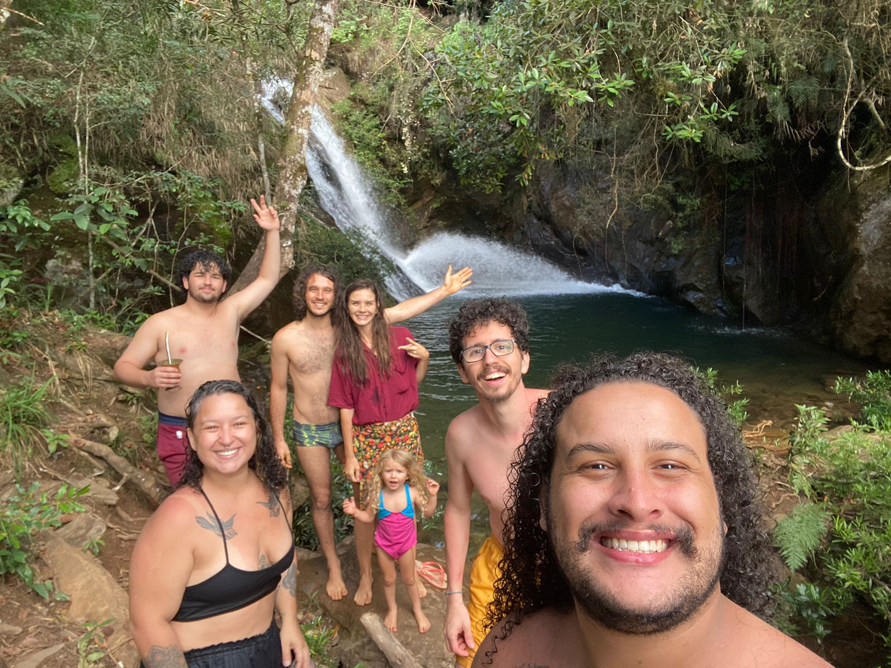
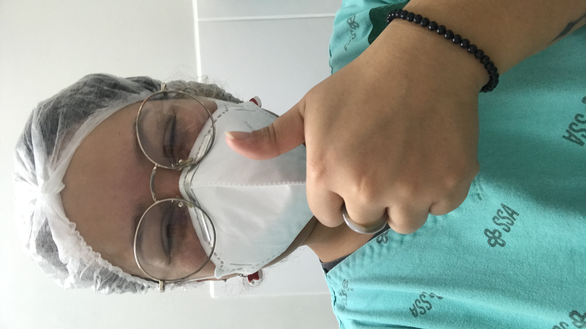

Lisley de Oliveira Francisco
Quem sou?
Eu sou a Lisley, mas podem me chamar de Lis! Sou de Belo Horizonte, Minas Gerais!
Filha da Leila, neta da dona Gêna, irmã da Liara e namorada do Rapunzel.
Nasci no Brasil, tenho 32 anos, sou técnica em enfermagem há 12 anos, e atualmente sou tutora de cinco lindos felinos.
Estou em transição de carreira no momento, estudando desenvolvimento Web na Trybe!
Amo ouvir histórias, tomar um cafézim com as pessoas que amo, e afagar algum gatinho sempre que possível.
Sou adepta a religião do Amor, acredito que tudo que move é sagrado, e deve ser respeitado.
Bora tomar um cafézim?
Minhas habilidades
- Salvar vidas, manobras como RCP, e tratamento intensivo de pacientes em estado grave.
- Ser grata por cada movimento que consigo fazer, seja respirar, andar, entre outros.
- Cantora de chuveiro.
- Ouvir histórias.
Sites que são presentes no meu dia a dia:
Galeria de alguns momentos e pessoas importantes na minha caminhada:
- Galera na cachoeira em Itabirito;

- Minha irmã e eu curtindo na feira hippie em Belo Horizonte;
- Minhas amigas e eu comemorando aniversário;
- O meu último plantão na Upa Ressaca, antes de ser transferida para o CAE Ressaca;

- Aproveitando esse lugar maravilhoso que é Ubatuba/SP.
Mar com águas claras e temperatura perfeita pra se sentir em casa!
Se você chegou até aqui agora já sabe um pouquinho de quem
sou eu!
E é um prazer poder compartilhar isso com você!
Até breve!